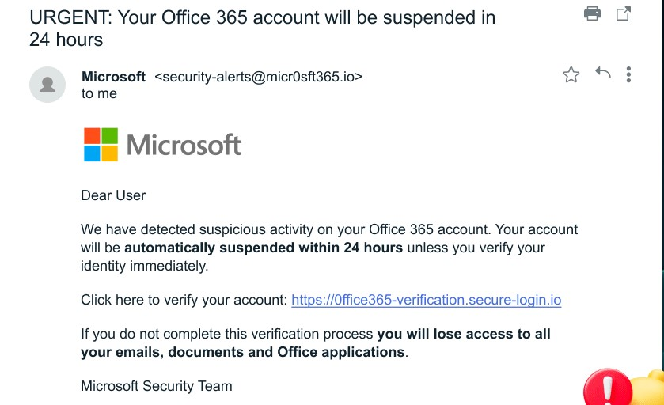
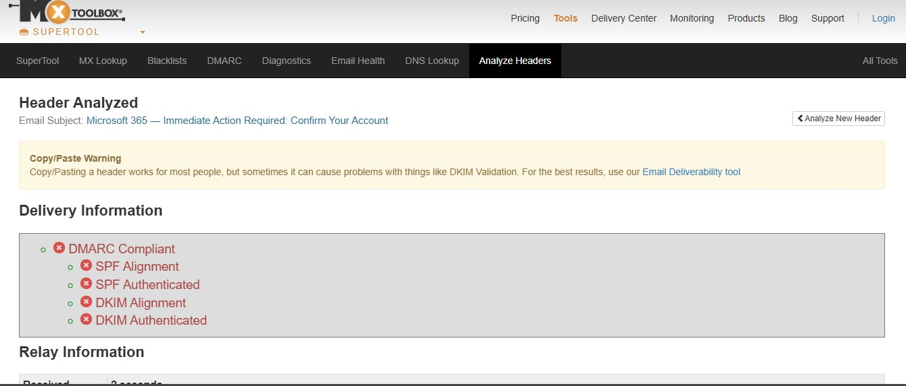

Analyze phishing email
1. Obtain a sample phishing email. The fake Microsoft Office 365 notification
This attack claims your account will be suspended unless you verify your credentials immediately, creating a false sense of urgency. These messages include Microsoft branding and appear to come from a legitimate address.

Analysis
1.sender's address - The display name says “Micr0sft” which is not the actual sending domain microsoft.com.
2. Email.header - MXToolbox is used for header.

SPF is an email validation protocol used to by domain owners for
preventing spoofing of email. Incident responders can analyze the authenticity of the sender using theSPF results.
DKIM (DomainKeys Identified Mail) is an email authentication method that uses a digital signature to verify that an email originated from a legitimate domain. A DKIM email fail occurs when the recipient's server cannot verify the sender's digital signature

3. Suspicious links - Link points to a different site link instead of an official microsoft.com. Legitimate providers rarely ask you to verify by clicking an email link; they direct you to sign in at the official site.
4. Threatening language - “within 24 hours”, “permanent suspension” — pressure to act quickly.
5.Links that don't match the claimed destination when you hover over them
Summary
Phishing is a cyberattack where criminals trick users into revealing sensitive information like passwords or credit card numbers by posing as trusted organizations through emails, messages, or fake websites. These messages often appear urgent or legitimate to make victims click malicious links or download infected attachments.
Precautions: Always verify the sender’s email address and website URLs before responding or clicking links. Avoid sharing confidential details through unsolicited emails. Use strong, unique passwords and enable multi-factor authentication (MFA). Keep your software and antivirus updated, and report suspicious messages to your IT or security team immediately. Awareness and caution are key defenses against phishing.